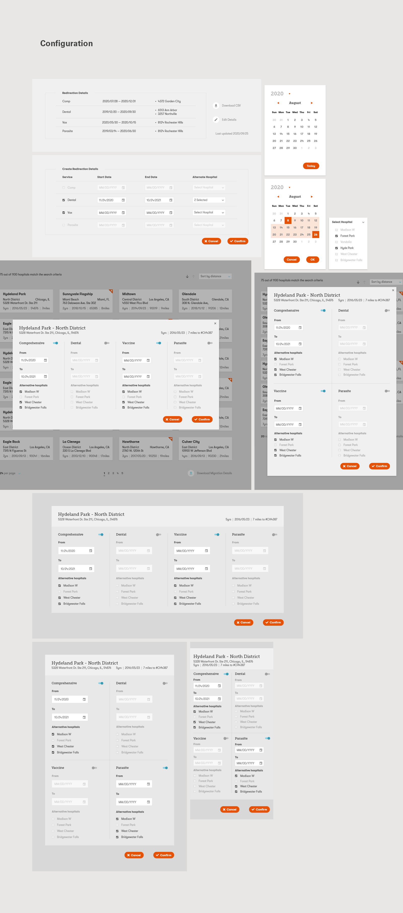
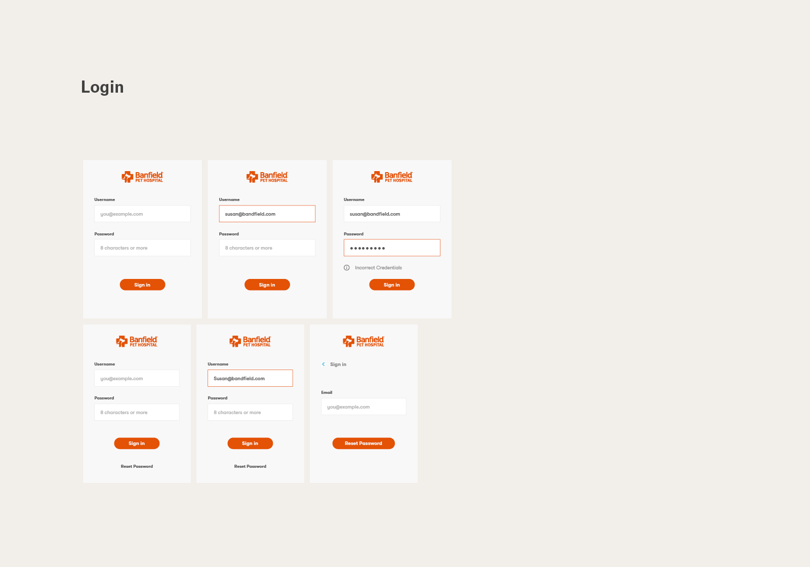
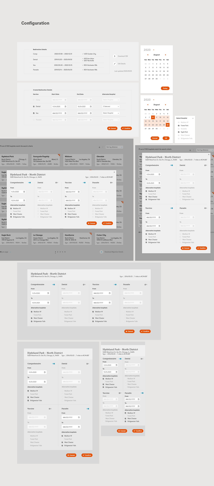
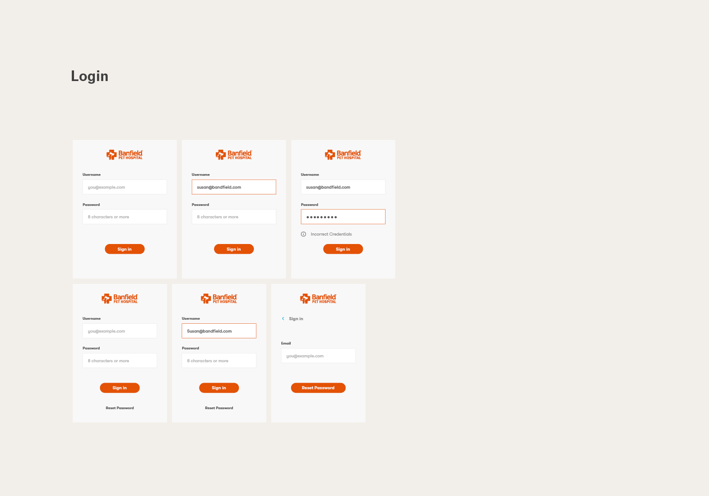

-
Clinic appointment management system on SFMC
A backend tool that integrates appointment data and email service on Salesforce Marketing Cloud.
-
Description
Banfield wanted to provide customers with the option to move their appointments to other nearby locations, in an effort to improve service experience and resource utilization. An automated management tool integrated with their appointment database was born. After reviewing communication preference and consent, the system contacts eligible customers via emails or text messages. The recipients are asked if they’d like to switch their appointments to another location for shorter wait times.
-
Time period
2020-2021
-
Credit
Design: Su
Prototype: Su
Functionality & scope: Katlin and Paul
SFMC consulting: Brian and Elise
-
Keywords
Salesforce Web / UI Web forms Product Business -
Design and prototype links
Process and mockup on Invision Login Search feed Search feed option 2 Datepicker


 


